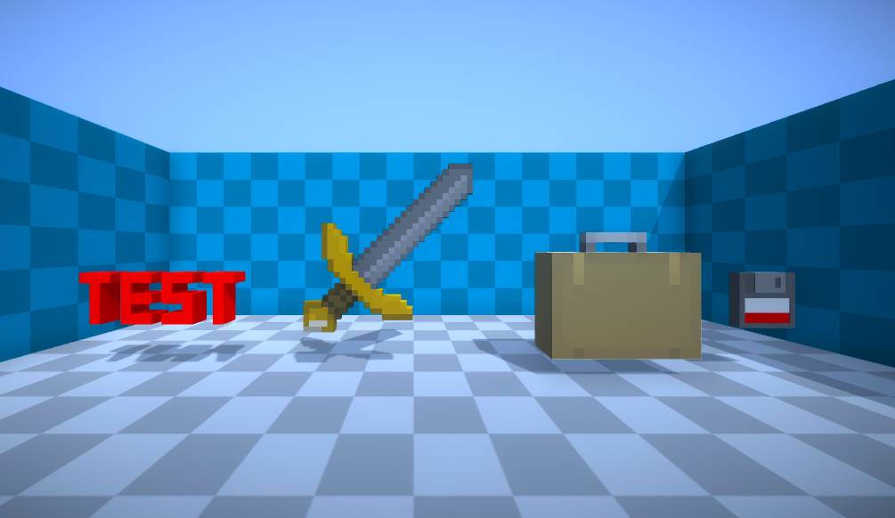

Unity Sprite Voxellator
A tool for the Unity editor that turns sprites into 3D voxel meshes. Supports greyscale pixel extrusion mapping and boasts various options and features. Inspired by a very similar tool called KenneyShape

A tool for the Unity editor that turns sprites into 3D voxel meshes. Supports greyscale pixel extrusion mapping and boasts various options and features. Inspired by a very similar tool called KenneyShape
